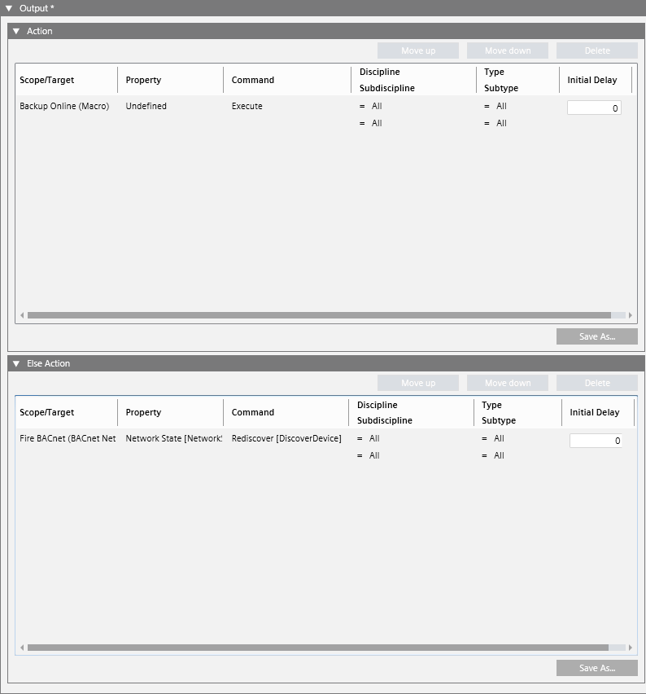

Configure the Output Instructions of the Reaction
You must configure at least one Action output instruction to be able to save the reaction.
- In the Reaction Editor tab, open the Output expander. Here you can configure what commands will be executed when the reaction is triggered (Action). You can also optionally configure commands to execute when it is not triggered (Else Action). For details, see Output Instructions of a Reaction.
- In System Browser, select the Manual navigation check box.
- In the Output expander, open the Action and Else Action expanders.
- To add a new instruction to the reaction output:
a. Drag the desired target object from System Browser into the empty area inside the Action or Else Action expander. This will cause a new row to be created.
b. Configure the other fields in the row to set what Property of the Target objects will be affected, and the Command to send.
c. (Optional) Filter by Discipline/Subdiscipline and Type/Subtype. This will cause the command to only be sent to target objects that match those criteria.
d. (Optional) In the Initial Delay field, set an initial delay before the command is sent out. - Repeat step 4 above to add other instructions.
- To add a macro instruction to the reaction output:
a. In System Browser, expand Applications > Logics > Macros.
b. From here, drag the desired macro into the empty area of the Scope/Target column in the Action expander or Else Action expander. This will cause the Action expander or Else Action to display a new instruction (row) which invokes the selected macro instruction. - Repeat step 6 above to add other macro instructions.
- (Optional) Use the Move Up and Move Down buttons to change the order of the instructions. Use Delete to remove any unwanted instructions.
